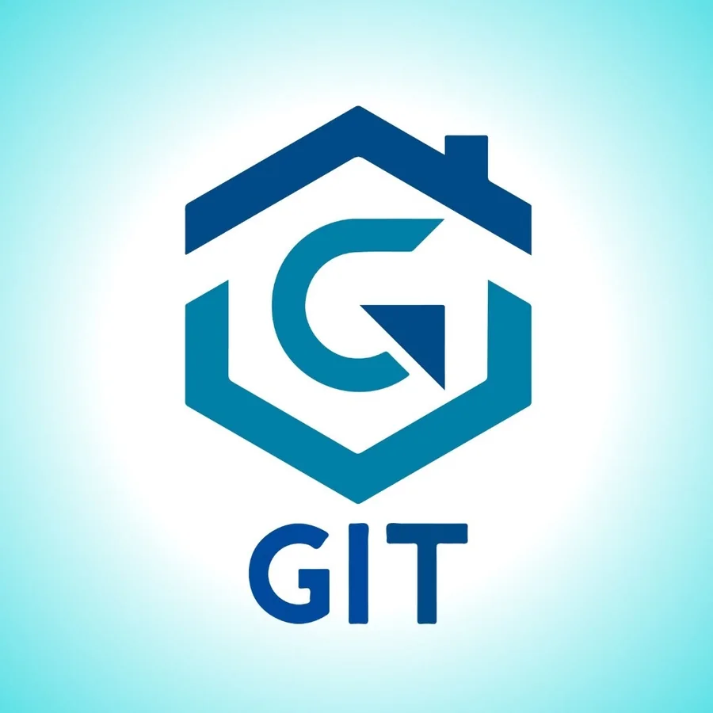
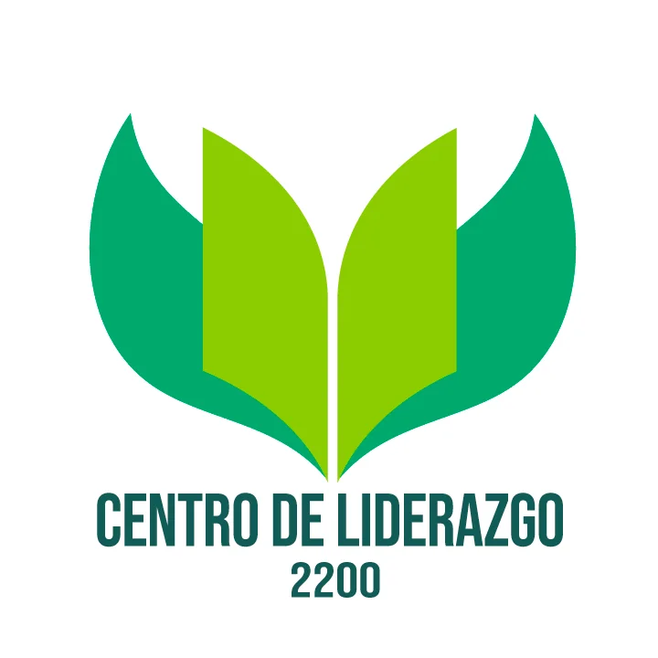
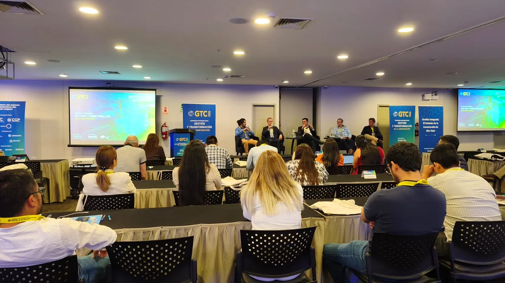

Lean UNI
Vicepresidente · Directiva 2026
Coordinación de actividades académicas, difusión de Lean Construction, VDC y BIM, y vinculación con profesionales del sector.
Liderazgo y participación
Comunidades, representación estudiantil, concursos, mentoría y actividades académicas que han fortalecido mi liderazgo, capacidad de organización y vocación de servicio.
Liderazgo y comunidades
Experiencias que me permitieron organizar actividades, representar a estudiantes y colaborar con comunidades vinculadas con la construcción.
Vicepresidente · Directiva 2026
Coordinación de actividades académicas, difusión de Lean Construction, VDC y BIM, y vinculación con profesionales del sector.
FIC-UNI · 2022–2023
Representación estudiantil, coordinación del código y organización de actividades académicas y de integración.

Miembro destacado
Participación en actividades relacionadas con gestión de proyectos, tecnología e innovación en la construcción.

Miembro
Participación en espacios de formación orientados al liderazgo, trabajo en equipo, comunicación y compromiso ciudadano.
Logros y reconocimientos
Propuesta desarrollada en equipo y reconocida por su innovación y compromiso.
Reconocimiento internacional al impacto y planteamiento de la propuesta.
Aplicación de análisis, diseño estructural y trabajo colaborativo.
Primer puesto en una competencia académica de conocimientos de Ingeniería Civil.
Reconocimiento al rendimiento académico en Ingeniería Civil.
Reconocimiento al compromiso y aporte al grupo estudiantil.
Enfoque
La formación se fortalece cuando el conocimiento se convierte en servicio, liderazgo y trabajo en equipo.
Mentoría y voluntariado
Patronato UNI · Mentor
Acompañamiento a estudiantes de primeros ciclos de Ingeniería Civil, orientándolos en su adaptación, organización y formación inicial.
VOLAR · Enseña Perú · Sembrando Cultura
Participación en actividades de mentoría y acompañamiento educativo, con veinte horas de trabajo voluntario.
Participación académica
Congresos, visitas técnicas y actividades de organización que complementan mi formación profesional.

GTC 2026
Participación en conferencias y espacios de intercambio sobre gestión, innovación y transformación del sector construcción.
Recorrido por instalaciones y procesos constructivos del proyecto ferroviario.
Apoyo en la organización y coordinación de actividades vinculadas con el PMI.
Colaboración en actividades de difusión, coordinación y soporte comercial del congreso.
Trayectoria en imágenes
Actividades académicas, institucionales y de integración que han fortalecido mi liderazgo, trabajo en equipo y compromiso con la comunidad universitaria.